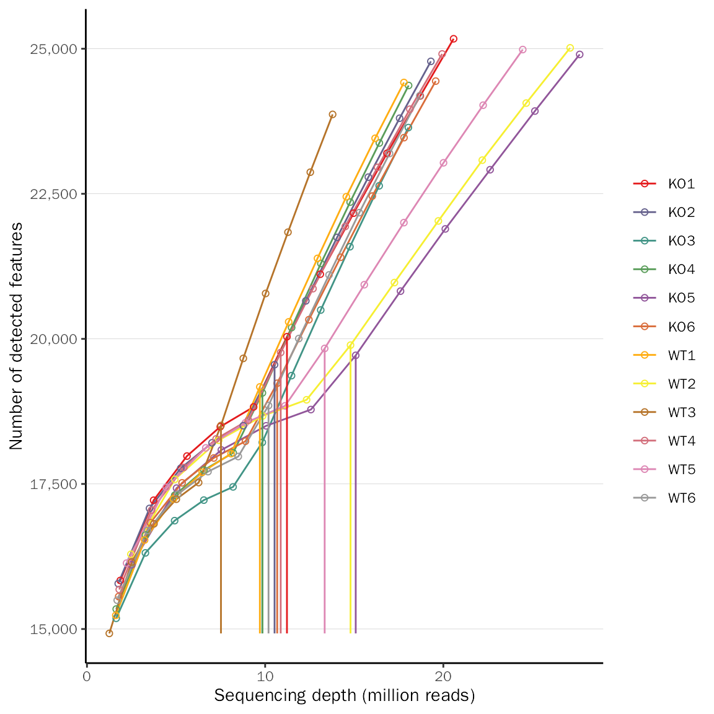
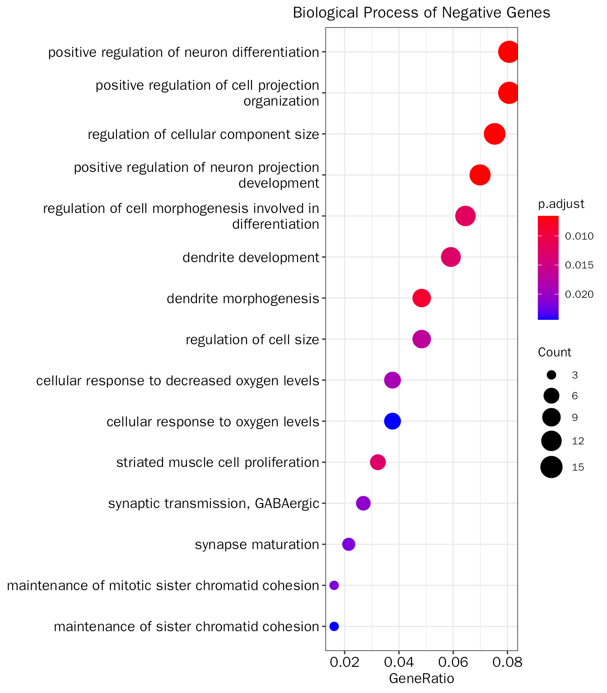
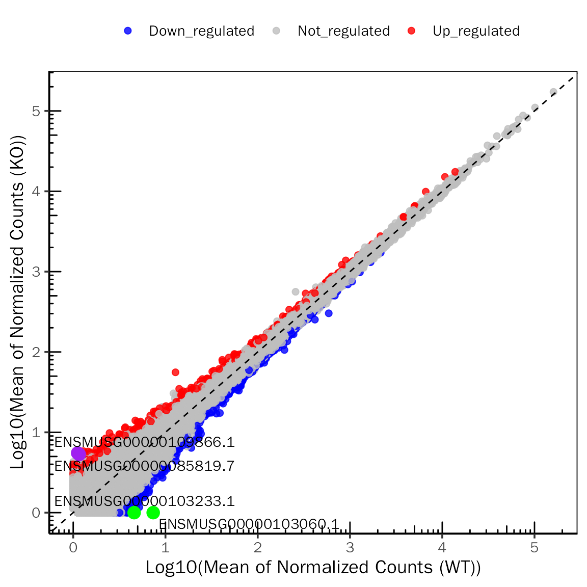

DEbPeak User Guide
Yabing Song
School of Life Sciences, Tsinghua Universitysongyb18@mails.tsinghua.edu.cn
12 十二月 2022
DEbPeak_All.RmdAbstract
The goal of DEbPeak is to explore, visualize, interpret RNA-seq data and decipher gene’s regulation by combining ChIP-seq and ATAC-seq data. It contains six functional modules: Quality Control (QC) on count matrix and samples, Principal Component Analysis (PCA) ,Differential Expression Gene Visualization (Volcano Plot, Scatter Plot, MA Plot, Rank Plot, Gene Plot, Heatmap), Functional Enrichment Analysis (GO enrichment analysis, KEGG enrichment analysis, Gene Set Enrichment Analysis), Integrate with ChIP-seq/ATAC-seq (Get consensus peaks, Peak profile plots, Peak annotaion, Integrate RNA-seq and ChIP-seq/ATAC-seq, Integrate summary, GO enrichment on integrated results, Find motif on integrated results), Utils (useful functions when dealing with RNA-seq data, including gene name conversion and count normalization).
Getting started
DEbPeak is an R package distributed on Github. To install the package, start R and enter:
# install via Github
# install.package("remotes") #In case you have not installed it.
remotes::install_github("showteeth/DEbPeak")Once DEbPeak is installed, it can be loaded by the following command.
library("DEbPeak")Introduction

DEbPeak aims to explore, visualize, interpret RNA-seq data and unravel the regulation of gene expression by combining ChIP-seq and ATAC-seq data. It contains six functional modules:
-
Quality Control (QC): QC on count matrix and samples.
- QC on count matrix: Proportion of genes detected in different samples under different CPM thresholds and the saturation of the number of genes detected.
- QC on samples: Euclidean distance and pearson correlation coefficient of samples across different conditions, sample similarity on selected principal components (check batch information and conduct batch correction) and outlier detection with robust PCA.
-
Principal Component Analysis (PCA): this module can be divided into three sub modules, basic info, loading related and 3D visualization.
- Basic info: scree plot (help to select the useful PCs), biplot (sample similarity with corresponding genes with larger loadings) and PC pairs plot (sample similarity under different PC combinations).
- Loading related: visualize genes with larger positive and negative loadings on selected PCs, conduct GO enrichment analysis on genes with larger positive and negative loadings on selected PCs.
- 3D visualization: visualize samples on three selected PCs.
- Differential Expression Gene Visualization: this module includes six powerful visualization methods (Volcano Plot, Scatter Plot, MA Plot, Rank Plot, Gene Plot, Heatmap).
-
Functional Enrichment Analysis (FEA): GO enrichment analysis, KEGG enrichment analysis, Gene Set Enrichment Analysis (GSEA).
- GO (Biological Process, Molecular Function, Cellular Component) and KEGG on differential expression genes
- GSEA on all genes
-
Integrate with ChIP-seq/ATAC-seq:
- Get consensus peaks: For multiple peak files, get consensus peaks; for single peak file, use it directly
- Peak profile plots: Heatmap of peak binding to TSS regions, Average Profile of ChIP peaks binding to TSS region, Profile of ChIP peaks binding to different regions.
- Peak annotaion
- Integrate RNA-seq and ChIP-seq/ATAC-seq: Integrate RNA-seq and ChIP-seq/ATAC-seq to find direct targets, including up-regulated and down-regulated.
- Integrate summary: Summary the integrated results, get the overlap number of up-regulated genes and ChIP-seq/ATAC-seq results (UP), down-regulated genes and ChIP-seq/ATAC-seq results.
- GO enrichment on integrated results: GO enrichment on up-regulated targets and down-regulated targets.
- Find motif on integrated results: This is a step unique to ATAC-seq. Due to the nature of ATAC-seq, we usually need to find motif on integrated results to obtain potential regulatory factors.
- Utils: useful functions when dealing with RNA-seq data, including gene name conversion and count normalization(DESeq2’s median of ratios, TMM, CPM, TPM, RPKM).
To enhance the ease of use of the tool, we have also developed an web server for DEbPeak that allows users to submit files to the web page and set parameters to get the desired results. Unlike the standalone R package, the web server has built-in DESeq2 for differential expression analysis, while the R package can accept user input results from DESeq2 or edgeR, which will be more flexible.
By the way, all plots generated are publication-ready , and most of them are based on ggplot2, so that users can easily modify them according to their needs. We also provide various color palettes, including discrete and continuous, color blind friendly and multiple categorical variables.
Load the data
The data used here are RNA-seq data of the external granule layer in the cerebellum of control and conditional SnoN knockout mice, the raw data are stored in GSE120279, they are used in Robust principal component analysis for accurate outlier sample detection in RNA-seq data.
First, we create DESeqDataSet object with above dataset:
suppressWarnings(suppressMessages(library(DESeq2)))
suppressWarnings(suppressMessages(library(DEbPeak)))
count.file <- system.file("extdata", "snon_count.txt", package = "DEbPeak")
meta.file <- system.file("extdata", "snon_meta.txt", package = "DEbPeak")
count.matrix <- read.table(file = count.file, header = T, sep = "\t")
head(count.matrix)## KO1 KO2 KO3 KO4 KO5 KO6 WT1 WT2 WT3 WT4 WT5
## ENSMUSG00000000001.4 4556 4218 3835 3718 5741 3875 4115 5074 2931 4374 5118
## ENSMUSG00000000003.15 0 0 0 0 0 0 0 0 0 0 0
## ENSMUSG00000000028.14 350 579 435 316 432 317 245 621 419 506 545
## ENSMUSG00000000031.16 268 804 66 207 46 66 336 112 60 69 137
## ENSMUSG00000000037.16 262 157 184 162 301 233 311 176 94 139 229
## ENSMUSG00000000049.11 0 0 0 0 0 0 1 0 2 0 1
## WT6
## ENSMUSG00000000001.4 3625
## ENSMUSG00000000003.15 0
## ENSMUSG00000000028.14 371
## ENSMUSG00000000031.16 193
## ENSMUSG00000000037.16 186
## ENSMUSG00000000049.11 0
meta.info <- read.table(file = meta.file, header = T)
head(meta.info)## condition
## KO1 KO
## KO2 KO
## KO3 KO
## KO4 KO
## KO5 KO
## KO6 KO
dds <- DESeq2::DESeqDataSetFromMatrix(countData = count.matrix, colData = meta.info, design = ~condition)
dds## class: DESeqDataSet
## dim: 53379 12
## metadata(1): version
## assays(1): counts
## rownames(53379): ENSMUSG00000000001.4 ENSMUSG00000000003.15 ...
## ENSMUSG00000115849.1 ENSMUSG00000115850.1
## rowData names(0):
## colnames(12): KO1 KO2 ... WT5 WT6
## colData names(1): conditionQuality Control
Quality control are of vital importance to get realiable results. Here, quality control includes two main aspects: sequencing saturation (QC on count matrix) and sample similarity (QC on samples).
QC on count matrix
CPM threshold
This plot shows proportion of genes detected in different samples at different CPM thresholds. Theoretically, all samples should be similarly distributed, so as to avoid false positive results obtained from detection problems.
CountQC(deobj = dds, group.key = "condition", type = "cpm")## Differential expression analysis with DESeq2!## [1] "Warning: 25096 features with 0 counts in all samples are to be removed for this analysis."
## [1] "Count distributions are to be computed for:"
## [1] "KO1" "KO2" "KO3" "KO4" "KO5" "KO6" "WT1" "WT2" "WT3" "WT4" "WT5" "WT6"sequencing saturation
This plot shows the proportion of genes detected at different sequencing depths. If the proportion is too low, it indicates that many genes are not detected and therefore some important information may be missing, and increasing the sequencing volume can effectively solve this problem.
CountQC(deobj = dds, group.key = "condition", type = "saturation")## Differential expression analysis with DESeq2!
QC on samples
QC on samples including four aspects:
- Euclidean distance and pearson correlation coefficient: sample similarity on the entire transcriptome.
- PCA: sample similarity on selected principal components.
- outlier detection with robust PCA
- batch correction
Euclidean distance and pearson correlation coefficient
SampleRelation(deobj = dds,transform.method = "rlog",anno.key = "condition")## Differential expression analysis with DESeq2!PCA
qc.pca.res=PCA(deobj = dds,transform.method = "rlog")## Differential expression analysis with DESeq2!## Use all genes for PCA!
PCAtools::biplot(qc.pca.res,x="PC1",y="PC2",colby="condition",legendPosition="bottom")
outlier detection with robust PCA
outlier.res=OutlierDetection(deobj = dds,var.genes = NULL,transform.method = "rlog")## Differential expression analysis with DESeq2!## Use all genes for PCA!## Detecting 2 outlier(s): KO3,WT1
outlier.res$outlier## [1] "KO3" "WT1"
outlier.res$plotFor batch correction and outlier detection, you can use the following codes:
# batch effect correction
# this is a demo scripts
batch.res=QCPCA(deobj = dds,var.genes = NULL,remove.sample=NULL,transform.method = "rlog",batch = "cell",
colby = "dex", outlier.detection = F)
batch.res$plot
# outlier detection
outlier.res=QCPCA(deobj = dds,var.genes = NULL,remove.sample=NULL,transform.method = "rlog",
outlier.detection = T,rpca.method = "PcaGrid")
outlier.res$plot
# the final dds
dds=outlier.res$deobj # or outlier.res$plotPrincipal Component Analysis
basic info
# conduct PCA
pca.res=PCA(deobj = dds,remove.sample = outlier.res$outlier,transform.method = "rlog")## Differential expression analysis with DESeq2!## Use all genes for PCA!
# get basic plots
basic.plots=PCABasic(pca.res,colby="condition",legend.pos = "right")## Coordinate system already present. Adding new coordinate system, which will replace the existing one.## Coordinate system already present. Adding new coordinate system, which will replace the existing one.
## Coordinate system already present. Adding new coordinate system, which will replace the existing one.
## Coordinate system already present. Adding new coordinate system, which will replace the existing one.
## Coordinate system already present. Adding new coordinate system, which will replace the existing one.
## Coordinate system already present. Adding new coordinate system, which will replace the existing one.
## Coordinate system already present. Adding new coordinate system, which will replace the existing one.
## Coordinate system already present. Adding new coordinate system, which will replace the existing one.
## Coordinate system already present. Adding new coordinate system, which will replace the existing one.
## Coordinate system already present. Adding new coordinate system, which will replace the existing one.
## Coordinate system already present. Adding new coordinate system, which will replace the existing one.
## Coordinate system already present. Adding new coordinate system, which will replace the existing one.
## Coordinate system already present. Adding new coordinate system, which will replace the existing one.
## Coordinate system already present. Adding new coordinate system, which will replace the existing one.
## Coordinate system already present. Adding new coordinate system, which will replace the existing one.
loading related
loading bar plot
# loading bar plot
LoadingPlot(pca.res,type = "bar")## Selecting by Loadding
## Selecting by Loaddingloading heatmap
# loading heatmap
LoadingPlot(pca.res,deobj = dds,type = "heat")## Differential expression analysis with DESeq2!## Selecting by Loadding
## Selecting by Loadding
export loading genes
# export loading genes on PC1 and PC2 (200 positive genes and 200 negative genes)
loading.gene.df=ExportPCGenes(pca = pca.res, pc = 1:2, gene.num = 200)## Selecting by Loadding
## Selecting by Loadding
head(loading.gene.df)## PC Gene Loadding Type
## 1 PC1 ENSMUSG00000038252.13 0.02543092 Positive
## 2 PC1 ENSMUSG00000027496.15 0.02457406 Positive
## 3 PC1 ENSMUSG00000030795.18 0.02395752 Positive
## 4 PC1 ENSMUSG00000031865.16 0.02373083 Positive
## 5 PC1 ENSMUSG00000027404.15 0.02319317 Positive
## 6 PC1 ENSMUSG00000063511.11 0.02220398 PositiveGO enrichment on loading genes
# save results to working folder
# LoadingGO(pca.res,gene.type="ENSEMBL",go.type="BP",padj.method="BH",save = T)
# return list
loading.go.results=LoadingGO(pca.res,gene.type="ENSEMBL",go.type="BP",padj.method="BH",str.width = 50,save = F)## Selecting by Loadding
## Selecting by Loadding
##
##
## Convert ENSEMBL to ENTREZID!
##
## 'select()' returned 1:many mapping between keys and columns
##
## conduct BP GO enrichment analysis.
##
## wrong orderBy parameter; set to default `orderBy = "x"`
##
## Scale for 'y' is already present. Adding another scale for 'y', which will
## replace the existing scale.
##
## Convert ENSEMBL to ENTREZID!
##
## 'select()' returned 1:many mapping between keys and columns
##
## conduct BP GO enrichment analysis.
##
## wrong orderBy parameter; set to default `orderBy = "x"`
##
## Scale for 'y' is already present. Adding another scale for 'y', which will
## replace the existing scale.positive loading genes GO
# positive loading genes
positive_go_results=loading.go.results[["Positive"]][["GO"]]
head(positive_go_results[["table"]])## ID Description
## GO:0022613 GO:0022613 ribonucleoprotein complex biogenesis
## GO:0008380 GO:0008380 RNA splicing
## GO:1903311 GO:1903311 regulation of mRNA metabolic process
## GO:0031331 GO:0031331 positive regulation of cellular catabolic process
## GO:0042254 GO:0042254 ribosome biogenesis
## GO:0006397 GO:0006397 mRNA processing
## GeneRatio BgRatio pvalue p.adjust qvalue
## GO:0022613 19/194 409/23328 1.667451e-09 4.440423e-06 3.787747e-06
## GO:0008380 17/194 386/23328 2.733412e-08 3.639538e-05 3.104580e-05
## GO:1903311 13/194 266/23328 3.862626e-07 3.428724e-04 2.924753e-04
## GO:0031331 15/194 396/23328 1.243752e-06 6.850558e-04 5.843628e-04
## GO:0042254 13/194 296/23328 1.286248e-06 6.850558e-04 5.843628e-04
## GO:0006397 16/194 462/23328 1.753069e-06 7.115007e-04 6.069208e-04
## geneID
## GO:0022613 Snrpb/Sf3a2/Hsp90ab1/Mybbp1a/Ruvbl2/Ddx39b/Ddx47/Ppan/Rcl1/Drosha/Rpl6/Puf60/Ddx54/Ddx27/Mrpl10/Ran/Noc2l/Abt1/Nop2
## GO:0008380 Fus/Snrpb/Snrnp70/Sf3a2/Srsf4/Ddx39b/Khsrp/Scaf1/Ddx47/Txnl4a/Snrpa/Snrpn/Puf60/U2af2/Taf15/Mettl3/Sf1
## GO:1903311 Fus/Snrnp70/Srsf4/Khsrp/Upf1/Fto/Supt5/Puf60/U2af2/Taf15/Mettl3/Gtpbp1/Sf1
## GO:0031331 Aurka/Khsrp/Upf1/Fto/Cdc20/Supt5/Fzr1/Bag6/Mettl3/Bcap31/Rnf185/Gtpbp1/Psen1/Hmox1/Gsk3a
## GO:0042254 Mybbp1a/Ddx47/Ppan/Rcl1/Drosha/Rpl6/Ddx54/Ddx27/Mrpl10/Ran/Noc2l/Abt1/Nop2
## GO:0006397 Snrpb/Snrnp70/Sf3a2/Srsf4/Ddx39b/Khsrp/Scaf1/Ddx47/Txnl4a/Snrpa/Supt5/Snrpn/Puf60/U2af2/Mettl3/Sf1
## Count
## GO:0022613 19
## GO:0008380 17
## GO:1903311 13
## GO:0031331 15
## GO:0042254 13
## GO:0006397 16
positive_go_results[["plot"]]
negative loading genes GO
# negative loading genes
negative_go_results=loading.go.results[["Negative"]][["GO"]]
head(negative_go_results[["table"]])## ID
## GO:0032535 GO:0032535
## GO:0045666 GO:0045666
## GO:0031346 GO:0031346
## GO:0010976 GO:0010976
## GO:0048813 GO:0048813
## GO:0010769 GO:0010769
## Description
## GO:0032535 regulation of cellular component size
## GO:0045666 positive regulation of neuron differentiation
## GO:0031346 positive regulation of cell projection organization
## GO:0010976 positive regulation of neuron projection development
## GO:0048813 dendrite morphogenesis
## GO:0010769 regulation of cell morphogenesis involved in differentiation
## GeneRatio BgRatio pvalue p.adjust qvalue
## GO:0032535 14/186 413/23328 6.228504e-06 0.006598163 0.005761002
## GO:0045666 15/186 472/23328 6.270266e-06 0.006598163 0.005761002
## GO:0031346 15/186 478/23328 7.290788e-06 0.006598163 0.005761002
## GO:0010976 13/186 372/23328 9.751787e-06 0.006619025 0.005779217
## GO:0048813 9/186 182/23328 1.622507e-05 0.008810210 0.007692389
## GO:0010769 12/186 351/23328 2.677346e-05 0.012114991 0.010577866
## geneID
## GO:0032535 Bmpr2/Map3k1/Sema3d/Dpysl2/Aqp4/Dcx/Pten/Nefl/Arhgap5/Pak3/Wnk3/Cracd/Map2/Tmsb15b1
## GO:0045666 Bmpr2/Cntn1/Fut9/Neurod1/Ube2v2/Cnr1/Dcx/Ptprz1/Tmem106b/Ror1/Pten/Nefl/Pak3/Qk/Elavl4
## GO:0031346 Bmpr2/Dock11/Cntn1/Fut9/Ube2v2/Cnr1/Dcx/Apc/Ptprz1/Tmem106b/Ror1/Nefl/Pak3/Qk/Elavl4
## GO:0010976 Bmpr2/Cntn1/Fut9/Ube2v2/Cnr1/Dcx/Ptprz1/Tmem106b/Ror1/Nefl/Pak3/Qk/Elavl4
## GO:0048813 Ube3a/Hecw1/Adam10/Dcx/Ptprz1/Tmem106b/Pten/Pak3/Elavl4
## GO:0010769 Bmpr2/Ube3a/Sema3d/Dpysl2/Hecw1/Adam10/Dcx/Ptprz1/Pten/Nefl/Pak3/Map2
## Count
## GO:0032535 14
## GO:0045666 15
## GO:0031346 15
## GO:0010976 13
## GO:0048813 9
## GO:0010769 12
negative_go_results[["plot"]]
Differential Expression Gene Visualization
Differential Expression Analysis
First you should get differential expression genes. For DESeq2 results:
# set control level
dds$condition <- relevel(dds$condition, ref = "WT")
# conduct differential expressed genes analysis
dds <- DESeq(dds)## estimating size factors## estimating dispersions## gene-wise dispersion estimates## mean-dispersion relationship## final dispersion estimates## fitting model and testing
# extract results
dds.results <- results(dds,contrast=c("condition",'KO','WT'))
dds.results.ordered <- dds.results[order(dds.results$log2FoldChange,decreasing = TRUE),]
head(dds.results.ordered)## log2 fold change (MLE): condition KO vs WT
## Wald test p-value: condition KO vs WT
## DataFrame with 6 rows and 6 columns
## baseMean log2FoldChange lfcSE stat pvalue
## <numeric> <numeric> <numeric> <numeric> <numeric>
## ENSMUSG00000025934.15 2.01093 4.46030 3.01742 1.47818 NA
## ENSMUSG00000105597.1 1.64376 4.16931 2.98872 1.39502 0.163011113
## ENSMUSG00000109866.1 2.32064 4.14573 1.22504 3.38415 0.000713987
## ENSMUSG00000085819.7 2.23441 4.07496 1.65939 2.45569 0.014061354
## ENSMUSG00000102474.1 1.52867 4.06781 1.80781 2.25013 0.024440396
## ENSMUSG00000042677.7 1.49781 4.05394 1.71350 2.36588 0.017987495
## padj
## <numeric>
## ENSMUSG00000025934.15 NA
## ENSMUSG00000105597.1 0.99973
## ENSMUSG00000109866.1 0.99973
## ENSMUSG00000085819.7 0.99973
## ENSMUSG00000102474.1 0.99973
## ENSMUSG00000042677.7 0.99973For edgeR results:
## 载入需要的程辑包：limma##
## 载入程辑包：'limma'## The following object is masked from 'package:DESeq2':
##
## plotMA## The following object is masked from 'package:BiocGenerics':
##
## plotMA
snon.edgeR=DGEList(counts=count.matrix, group=meta.info$condition)
keep <- filterByExpr(snon.edgeR,min.count=10)
snon.edgeR <- snon.edgeR[keep, , keep.lib.sizes=FALSE]
snon.edgeR <- calcNormFactors(snon.edgeR)
snon.edgeR$samples$group <- relevel(snon.edgeR$samples$group, ref="WT")
design <- model.matrix(~snon.edgeR$samples$group)
snon.edgeR <- estimateDisp(snon.edgeR, design)
fit <- glmQLFit(snon.edgeR, design)
qlf <- glmQLFTest(fit, coef=2)
all.res <- topTags(qlf,n=nrow(snon.edgeR$counts))$table
head(all.res)## logFC logCPM F PValue FDR
## ENSMUSG00000039620.17 2.1925630 1.7076072 70.78781 2.686429e-07 0.003577786
## ENSMUSG00000046152.16 -0.7238661 4.9567684 36.89615 1.550592e-05 0.103253915
## ENSMUSG00000022376.8 -1.7356149 0.3243428 21.61086 2.617267e-04 0.998523400
## ENSMUSG00000027660.16 -0.9581197 5.3679317 19.98078 3.791045e-04 0.998523400
## ENSMUSG00000031478.16 0.8734604 2.4708238 18.99645 4.783255e-04 0.998523400
## ENSMUSG00000079469.10 -1.2129059 1.4296852 18.36878 5.568020e-04 0.998523400Visualization
VolcanoPlot
# VolcanoPlot for DESeq2
VolcanoPlot(dds.results.ordered,signif="pvalue",l2fc.threshold=0.3,label.num=2,
point.alpha = 0.8, label.color=c("purple","green"),tick.trans = NULL)## Differential expression analysis with DESeq2!
# VolcanoPlot for edgeR
VolcanoPlot(all.res,signif="PValue",l2fc.threshold=0.3,label.num=2,point.alpha = 0.8,
label.color=c("purple","green"),tick.trans = NULL)## Differential expression analysis with edgeR!ScatterPlot
# ScatterPlot for DESeq2
ScatterPlot(deobj = dds,deres = dds.results.ordered,group.key = "condition",
ref.group = "WT",signif="pvalue",l2fc.threshold=0.3,label.num = 2,
point.alpha = 0.8,label.color=c("purple","green"))## Differential expression analysis with DESeq2!
# ScatterPlot for edgeR
ScatterPlot(deobj = snon.edgeR,deres = all.res,group.key = "condition",
ref.group = "WT",signif="PValue",l2fc.threshold=0.3,label.num = 2,
point.alpha = 0.8,label.color=c("purple","green"))## Differential expression analysis with edgeR!
MAPlot
# MAPlot for DESeq2
MAPlot(dds.results.ordered,signif="pvalue",l2fc.threshold=0.3,label.num=2,
point.alpha = 0.8, label.color=c("purple","green"))## Differential expression analysis with DESeq2!
# MAPlot for edgeR
MAPlot(all.res,signif="PValue",l2fc.threshold=0.3,label.num=2,point.alpha = 0.8,
label.color=c("purple","green"))## Differential expression analysis with edgeR!
RankPlot
# RankPlot for DESeq2
RankPlot(dds.results.ordered,signif="pvalue",l2fc.threshold=0.3,label.num=2,
point.alpha = 0.8, label.color=c("purple","green"))## Differential expression analysis with DESeq2!
# RankPlot for edgeR
RankPlot(all.res,signif="PValue",l2fc.threshold=0.3,label.num=2,point.alpha = 0.8,
label.color=c("purple","green"))## Differential expression analysis with edgeR!
GenePlot
# GenePlot for DESeq2
GenePlot(deobj = dds,deres = dds.results.ordered,group.key = "condition",
ref.group = "WT",fill.color=c("red","blue"), fill.alpha = 0.8,
gene.num =2,signif="pvalue",l2fc.threshold=0.3)## Differential expression analysis with DESeq2!
# GenePlot for edgeR
GenePlot(deobj = snon.edgeR,deres = all.res,group.key = "condition",
ref.group = "WT",fill.color=c("red","blue"),fill.alpha = 0.8,
gene.num =2,signif="PValue",l2fc.threshold=0.3)## Differential expression analysis with edgeR!
DEHeatmap
# DEHeatmap for DESeq2
DEHeatmap(deobj = dds,deres = dds.results.ordered,group.key = "condition",
ref.group = "WT", signif="pvalue",l2fc.threshold=0.3)## Differential expression analysis with DESeq2!
# DEHeatmap for edgeR
DEHeatmap(deobj = snon.edgeR,deres = all.res,group.key = "condition",
ref.group = "WT", signif="PValue",l2fc.threshold=0.3)## Differential expression analysis with edgeR!
Functional Enrichment Analysis
GO enrichment
# save results to working directory
# ConductFE(deres = dds.results.ordered, signif = "pvalue", l2fc.threshold = 0.3,enrich.type = "GO")
all.go.results=ConductFE(deres = dds.results.ordered, signif = "pvalue", l2fc.threshold = 0.3,enrich.type = "GO",str.width = 50, save = F)## Differential expression analysis with DESeq2!## Convert ENSEMBL to ENTREZID!## 'select()' returned 1:many mapping between keys and columns## conduct ALL GO enrichment analysis on: UP## wrong orderBy parameter; set to default `orderBy = "x"`## Scale for 'y' is already present. Adding another scale for 'y', which will
## replace the existing scale.## wrong orderBy parameter; set to default `orderBy = "x"`## Scale for 'y' is already present. Adding another scale for 'y', which will
## replace the existing scale.## Convert ENSEMBL to ENTREZID!## 'select()' returned 1:1 mapping between keys and columns## conduct ALL GO enrichment analysis on: DOWN## wrong orderBy parameter; set to default `orderBy = "x"`## Scale for 'y' is already present. Adding another scale for 'y', which will
## replace the existing scale.Up regulated
overview
up.go.res=all.go.results[["UP"]][["GO"]]
up.go.res.table=up.go.res[["table"]]
head(up.go.res.table)## ONTOLOGY ID Description
## GO:0097060 CC GO:0097060 synaptic membrane
## GO:0099240 CC GO:0099240 intrinsic component of synaptic membrane
## GO:0014069 CC GO:0014069 postsynaptic density
## GO:0032279 CC GO:0032279 asymmetric synapse
## GO:0098839 CC GO:0098839 postsynaptic density membrane
## GO:0098984 CC GO:0098984 neuron to neuron synapse
## GeneRatio BgRatio pvalue p.adjust qvalue
## GO:0097060 15/231 470/23271 7.783967e-05 0.01822125 0.01447238
## GO:0099240 10/231 244/23271 1.732798e-04 0.01822125 0.01447238
## GO:0014069 13/231 400/23271 1.957825e-04 0.01822125 0.01447238
## GO:0032279 13/231 405/23271 2.208636e-04 0.01822125 0.01447238
## GO:0098839 6/231 97/23271 4.175021e-04 0.01868255 0.01483877
## GO:0098984 13/231 433/23271 4.183638e-04 0.01868255 0.01483877
## geneID
## GO:0097060 Slc6a2/Met/Nt5e/Lpar2/Grik1/Tenm2/Tiam1/Abhd6/Rgs7bp/Epha7/Snap25/Atp2b2/Adcy1/Adgrl2/Cacng2
## GO:0099240 Lpar2/Grik1/Abhd6/Rgs7bp/Epha7/Snap25/Atp2b2/Adcy1/Adgrl2/Cacng2
## GO:0014069 Nefh/Met/Grik1/Rapgef4/Tiam1/Rgs7bp/Epha7/Ctnnd2/Map1b/Atp2b2/Pak2/Adcy1/Cacng2
## GO:0032279 Nefh/Met/Grik1/Rapgef4/Tiam1/Rgs7bp/Epha7/Ctnnd2/Map1b/Atp2b2/Pak2/Adcy1/Cacng2
## GO:0098839 Tiam1/Rgs7bp/Epha7/Atp2b2/Adcy1/Cacng2
## GO:0098984 Nefh/Met/Grik1/Rapgef4/Tiam1/Rgs7bp/Epha7/Ctnnd2/Map1b/Atp2b2/Pak2/Adcy1/Cacng2
## Count
## GO:0097060 15
## GO:0099240 10
## GO:0014069 13
## GO:0032279 13
## GO:0098839 6
## GO:0098984 13
Down regulated
overview
down.go.res=all.go.results[["DOWN"]][["GO"]]
down.go.res.table = down.go.res[["table"]]
head(down.go.res.table)## ONTOLOGY ID Description GeneRatio BgRatio
## GO:0005604 CC GO:0005604 basement membrane 7/229 114/23271
## pvalue p.adjust qvalue
## GO:0005604 0.0001374573 0.04178703 0.04007966
## geneID Count
## GO:0005604 Ntn4/Ntn1/Col4a2/Egflam/Papln/Fras1/Col4a4 7
KEGG enrichment
# save results to working directory
# ConductFE(deres = dds.results.ordered, signif = "pvalue", l2fc.threshold = 0.3,enrich.type = "KEGG")
all.kegg.results=ConductFE(deres = dds.results.ordered, signif = "pvalue", l2fc.threshold = 0.3,enrich.type = "KEGG", str.width = 50, save = F)## Differential expression analysis with DESeq2!## Convert ENSEMBL to ENTREZID!## 'select()' returned 1:many mapping between keys and columns## conduct KEGG enrichment analysis.## Reading KEGG annotation online:
##
## Reading KEGG annotation online:## wrong orderBy parameter; set to default `orderBy = "x"`## Scale for 'y' is already present. Adding another scale for 'y', which will
## replace the existing scale.## Convert ENSEMBL to ENTREZID!## 'select()' returned 1:1 mapping between keys and columns## conduct KEGG enrichment analysis.Up
overview
up.kegg.res=all.kegg.results[["UP"]][["KEGG"]]
up.kegg.res.table=up.kegg.res[["table"]]
head(up.kegg.res.table)## ID Description GeneRatio BgRatio pvalue
## mmu04911 mmu04911 Insulin secretion 7/101 86/9030 4.633148e-05
## mmu04024 mmu04024 cAMP signaling pathway 10/101 220/9030 1.664655e-04
## p.adjust qvalue
## mmu04911 0.01014659 0.008973675
## mmu04024 0.01822797 0.016120868
## geneID Count
## mmu04911 Kcnmb2/Kcnn3/Creb5/Rapgef4/Creb3l2/Snap25/Adcy1 7
## mmu04024 Cftr/Atp2a3/Creb5/Rapgef4/Tiam1/Creb3l2/Sox9/Atp2b2/Crebbp/Adcy1 10
Down
overview
down.kegg.res=all.kegg.results[["DOWN"]][["KEGG"]]
down.kegg.res.table=down.kegg.res[["table"]]
head(down.kegg.res.table)## [1] ID Description GeneRatio BgRatio pvalue p.adjust
## [7] qvalue geneID Count
## <0 行> (或0-长度的row.names)
GSEA
For human, we can download gmt file from MSigDB. For other species, we can obtain gene sets via msigdbr.
msigdbr gene sets
library(msigdbr)
# list all possible species
msigdbr_species()## # A tibble: 20 x 2
## species_name species_common_name
## <chr> <chr>
## 1 Anolis carolinensis Carolina anole, green anole
## 2 Bos taurus bovine, cattle, cow, dairy cow, domestic cattle,…
## 3 Caenorhabditis elegans roundworm
## 4 Canis lupus familiaris dog, dogs
## 5 Danio rerio leopard danio, zebra danio, zebra fish, zebrafish
## 6 Drosophila melanogaster fruit fly
## 7 Equus caballus domestic horse, equine, horse
## 8 Felis catus cat, cats, domestic cat
## 9 Gallus gallus bantam, chicken, chickens, Gallus domesticus
## 10 Homo sapiens human
## 11 Macaca mulatta rhesus macaque, rhesus macaques, Rhesus monkey, …
## 12 Monodelphis domestica gray short-tailed opossum
## 13 Mus musculus house mouse, mouse
## 14 Ornithorhynchus anatinus duck-billed platypus, duckbill platypus, platypus
## 15 Pan troglodytes chimpanzee
## 16 Rattus norvegicus brown rat, Norway rat, rat, rats
## 17 Saccharomyces cerevisiae baker's yeast, brewer's yeast, S. cerevisiae
## 18 Schizosaccharomyces pombe … <NA>
## 19 Sus scrofa pig, pigs, swine, wild boar
## 20 Xenopus tropicalis tropical clawed frog, western clawed frog
# create gene sets
m_t2g <- msigdbr(species = "Mus musculus", category = "C5", subcategory = "BP") %>%
dplyr::select(gs_name, entrez_gene)
head(m_t2g)## # A tibble: 6 x 2
## gs_name entrez_gene
## <chr> <int>
## 1 GOBP_10_FORMYLTETRAHYDROFOLATE_METABOLIC_PROCESS 67618
## 2 GOBP_10_FORMYLTETRAHYDROFOLATE_METABOLIC_PROCESS 107747
## 3 GOBP_10_FORMYLTETRAHYDROFOLATE_METABOLIC_PROCESS 216188
## 4 GOBP_10_FORMYLTETRAHYDROFOLATE_METABOLIC_PROCESS 108156
## 5 GOBP_10_FORMYLTETRAHYDROFOLATE_METABOLIC_PROCESS 270685
## 6 GOBP_10_FORMYLTETRAHYDROFOLATE_METABOLIC_PROCESS 665563Conduct GSEA
gsea.results=ConductGSEA(deres = dds.results.ordered,gmt.file = NULL,gene.sets = m_t2g,save = F)## Differential expression analysis with DESeq2!## Convert ENSEMBL to ENTREZID!## 'select()' returned 1:many mapping between keys and columns## conduct GSEA anaysis.## preparing geneSet collections...## GSEA analysis...## no term enriched under specific pvalueCutoff...results overview
gsea.results.table=gsea.results[["table"]]
head(gsea.results.table)## [1] ID Description setSize enrichmentScore
## [5] NES pvalue p.adjust qvalues
## <0 行> (或0-长度的row.names)All-in-one analysis
To enhance the usability of the tool, we create a all-in-one analysis command, all results will be saved in specific directory:
library(msigdbr)
m_t2g <- msigdbr(species = "Mus musculus", category = "C5") %>%
dplyr::select(gs_name, entrez_gene)
count.file <- system.file("extdata", "snon_count.txt", package = "DEbPeak")
meta.file <- system.file("extdata", "snon_meta.txt", package = "DEbPeak")
ConductDESeq2(count.matrix.file = count.file, meta.file = meta.file, out.folder="/home/songyabing/R/learn/tmp/dekit/AllInOne",
signif = "pvalue", l2fc.threshold = 0.3,
group.key = "condition", ref.group = "WT",gmt.file = NULL, gene.sets = m_t2g)The structrue of results folder:
tree /home/songyabing/R/learn/tmp/dekit/AllInOne## /home/songyabing/R/learn/tmp/dekit/AllInOne
## ├── CountQC_CPM.pdf
## ├── CountQC_saturation.pdf
## ├── DEG
## │ ├── Condition_KO_WT_all.csv
## │ ├── Condition_KO_WT_pvalue0.05_FC0.3.csv
## │ ├── DEG_GenePlot.pdf
## │ ├── DEG_Heatmap.pdf
## │ ├── DEG_MAPlot.pdf
## │ ├── DEG_RankPlot.pdf
## │ ├── DEG_ScatterPlot.pdf
## │ ├── DEG_VolcanoPlot.pdf
## │ └── normalized_counts.csv
## ├── DEkit_all_in_one.RData
## ├── FE
## │ ├── DOWN_ALL_GO.csv
## │ ├── DOWN_Biological_Process.png
## │ ├── DOWN_Cellular_Component.png
## │ ├── DOWN_Functional_Enrichment.pdf
## │ ├── DOWN_KEGG.csv
## │ ├── DOWN_KEGG_Enrichment.png
## │ ├── DOWN_Molecular_Function.png
## │ ├── UP_ALL_GO.csv
## │ ├── UP_Biological_Process.png
## │ ├── UP_Cellular_Component.png
## │ ├── UP_Functional_Enrichment.pdf
## │ ├── UP_KEGG.csv
## │ ├── UP_KEGG_Enrichment.png
## │ └── UP_Molecular_Function.png
## ├── GSEA
## │ └── GSEA_enrich_result.csv
## ├── PCA
## │ ├── PC1
## │ │ ├── Negative
## │ │ │ ├── PC1_Negative_ALL_GO.csv
## │ │ │ └── PC1_Negative_KEGG.csv
## │ │ └── Positive
## │ │ ├── PC1_Positive_ALL_GO.csv
## │ │ └── PC1_Positive_KEGG.csv
## │ ├── PC1_Negative_Biological_Process.png
## │ ├── PC1_Negative_Cellular_Component.png
## │ ├── PC1_Negative_Functional_Enrichment.pdf
## │ ├── PC1_Negative_KEGG_Enrichment.png
## │ ├── PC1_Negative_Molecular_Function.png
## │ ├── PC1_Positive_Biological_Process.png
## │ ├── PC1_Positive_Cellular_Component.png
## │ ├── PC1_Positive_Functional_Enrichment.pdf
## │ ├── PC1_Positive_KEGG_Enrichment.png
## │ ├── PC1_Positive_Molecular_Function.png
## │ ├── PC2
## │ │ ├── Negative
## │ │ │ ├── PC2_Negative_ALL_GO.csv
## │ │ │ └── PC2_Negative_KEGG.csv
## │ │ └── Positive
## │ │ ├── PC2_Positive_ALL_GO.csv
## │ │ └── PC2_Positive_KEGG.csv
## │ ├── PC2_Negative_Biological_Process.png
## │ ├── PC2_Negative_Cellular_Component.png
## │ ├── PC2_Negative_Functional_Enrichment.pdf
## │ ├── PC2_Negative_KEGG_Enrichment.png
## │ ├── PC2_Negative_Molecular_Function.png
## │ ├── PC2_Positive_Biological_Process.png
## │ ├── PC2_Positive_Cellular_Component.png
## │ ├── PC2_Positive_Functional_Enrichment.pdf
## │ ├── PC2_Positive_KEGG_Enrichment.png
## │ ├── PC2_Positive_Molecular_Function.png
## │ ├── PC3
## │ │ ├── Negative
## │ │ │ ├── PC3_Negative_ALL_GO.csv
## │ │ │ └── PC3_Negative_KEGG.csv
## │ │ └── Positive
## │ │ ├── PC3_Positive_ALL_GO.csv
## │ │ └── PC3_Positive_KEGG.csv
## │ ├── PC3_Negative_Biological_Process.png
## │ ├── PC3_Negative_Cellular_Component.png
## │ ├── PC3_Negative_Functional_Enrichment.pdf
## │ ├── PC3_Negative_KEGG_Enrichment.png
## │ ├── PC3_Negative_Molecular_Function.png
## │ ├── PC3_Positive_Biological_Process.png
## │ ├── PC3_Positive_Cellular_Component.png
## │ ├── PC3_Positive_Functional_Enrichment.pdf
## │ ├── PC3_Positive_KEGG_Enrichment.png
## │ ├── PC3_Positive_Molecular_Function.png
## │ ├── PC4
## │ │ ├── Negative
## │ │ │ ├── PC4_Negative_ALL_GO.csv
## │ │ │ └── PC4_Negative_KEGG.csv
## │ │ └── Positive
## │ │ ├── PC4_Positive_ALL_GO.csv
## │ │ └── PC4_Positive_KEGG.csv
## │ ├── PC4_Negative_Biological_Process.png
## │ ├── PC4_Negative_Cellular_Component.png
## │ ├── PC4_Negative_Functional_Enrichment.pdf
## │ ├── PC4_Negative_KEGG_Enrichment.png
## │ ├── PC4_Negative_Molecular_Function.png
## │ ├── PC4_Positive_Biological_Process.png
## │ ├── PC4_Positive_Cellular_Component.png
## │ ├── PC4_Positive_Functional_Enrichment.pdf
## │ ├── PC4_Positive_KEGG_Enrichment.png
## │ ├── PC4_Positive_Molecular_Function.png
## │ ├── PC5
## │ │ ├── Negative
## │ │ │ ├── PC5_Negative_ALL_GO.csv
## │ │ │ └── PC5_Negative_KEGG.csv
## │ │ └── Positive
## │ │ ├── PC5_Positive_ALL_GO.csv
## │ │ └── PC5_Positive_KEGG.csv
## │ ├── PC5_Negative_Biological_Process.png
## │ ├── PC5_Negative_Cellular_Component.png
## │ ├── PC5_Negative_Functional_Enrichment.pdf
## │ ├── PC5_Negative_KEGG_Enrichment.png
## │ ├── PC5_Negative_Molecular_Function.png
## │ ├── PC5_Positive_Biological_Process.png
## │ ├── PC5_Positive_Cellular_Component.png
## │ ├── PC5_Positive_Functional_Enrichment.pdf
## │ ├── PC5_Positive_KEGG_Enrichment.png
## │ ├── PC5_Positive_Molecular_Function.png
## │ ├── PCA_3DPCA.pdf
## │ ├── PCA_biplot.pdf
## │ ├── PCA_loading_bar.pdf
## │ ├── PCA_loading_heat.pdf
## │ ├── PCA_overview.pdf
## │ ├── PCA_pairs_plot.pdf
## │ └── PCA_screen_plot.pdf
## └── SampleQC_dist_pcc.pdf
##
## 19 directories, 105 filesIntegrate RNA-seq and ChIP-seq/ATAC-seq
The data used here contains RNA-seq and ChIP-seq datasets from RUNX represses Pmp22 to drive neurofibromagenesis:
- RNA-seq: two genotypes and three samples per genotype, the raw data are stored in GSE122774
- ChIP-seq: two genotypes and one sample per genotype, the raw data are stored in GSE122775
- ATAC-seq: two genotypes and one sample per genotype, the raw data are stored in GSE122776
Prepare DEGs
# prepare count matrix and metadata
debchip.count.file <- system.file("extdata", "debchip_count.txt", package = "DEbPeak")
debchip.meta.file <- system.file("extdata", "debchip_meta.txt", package = "DEbPeak")
debchip.count.matrix <- read.table(file = debchip.count.file, header = T, sep = "\t")
debchip.meta.info <- read.table(file = debchip.meta.file, header = T)
# create DESeqDataSet object
debchip.dds <- DESeq2::DESeqDataSetFromMatrix(countData = debchip.count.matrix,
colData = debchip.meta.info,
design = ~condition)## Warning in DESeqDataSet(se, design = design, ignoreRank): some variables in
## design formula are characters, converting to factors
# set control level
debchip.dds$condition <- relevel(debchip.dds$condition, ref = "NF")
# conduct differential expressed genes analysis
debchip.dds <- DESeq(debchip.dds)## estimating size factors## estimating dispersions## gene-wise dispersion estimates## mean-dispersion relationship## final dispersion estimates## fitting model and testing
# extract results
debchip.dds.results <- results(debchip.dds,contrast=c("condition",'RX','NF'))
debchip.dds.results.ordered <- debchip.dds.results[order(debchip.dds.results$log2FoldChange,decreasing = TRUE),]
head(debchip.dds.results.ordered)## log2 fold change (MLE): condition RX vs NF
## Wald test p-value: condition RX vs NF
## DataFrame with 6 rows and 6 columns
## baseMean log2FoldChange lfcSE stat pvalue padj
## <numeric> <numeric> <numeric> <numeric> <numeric> <numeric>
## Sycp1 12.07541 7.15056 3.91075 1.82844 6.74840e-02 1.81006e-01
## Gm16532 10.07020 6.89407 1.74281 3.95573 7.63014e-05 7.17146e-04
## Hs3st4 18.88787 6.82852 1.42952 4.77679 1.78117e-06 2.83848e-05
## Nell1 34.13399 6.80718 1.34257 5.07027 3.97260e-07 7.79916e-06
## Sptssb 9.39376 6.78558 1.52948 4.43651 9.14275e-06 1.16684e-04
## Myo3a 7.19992 6.41077 1.74865 3.66612 2.46259e-04 1.94151e-03Prepare ChIP-seq data
Consensus peaks
In this step, we will get consensus peaks with MSPC when multiple peak files are available, but when there is only one peak file, we will use it directly (make sure this peak file contains five columns: “chr”, “start”, “stop”, “name”, “score”).
# get consensus peak
peak.file = system.file("extdata", "debchip_peaks.bed", package = "DEbPeak")
peak.df = GetConsensusPeak(peak.file = peak.file)
head(peak.df)## chr start stop name score
## 1 chr13 51519018 51519164 chr13-5 27.6
## 2 chr13 21326999 21327145 chr13-6 25.2
## 3 chr5 151112840 151112986 chr5-2 22.3
## 4 chr11 104361891 104362037 chr11-98 21.8
## 5 chr11 70198551 70198697 chr11-88 21.3
## 6 chr6 29326952 29327098 chr6-4 20.8Peak profile
Check the profle of consensus peaks:
# peak profile plot
peak.profile = PeakProfile(peak.df ,species="Mouse", by = "gene", region.type = "body", nbin = 800)## >> preparing promoter regions... 2022-12-12 12时25分49秒
## >> preparing tag matrix... 2022-12-12 12时25分50秒
## >> preparing start_site regions by ... 2022-12-12 12时25分50秒
## >> preparing tag matrix... 2022-12-12 12时25分50秒
## >> generating figure... 2022-12-12 12时25分58秒## >> done... 2022-12-12 12时25分58秒## >> binning method is used...2022-12-12 12时25分58秒
## >> preparing start_site regions by gene... 2022-12-12 12时25分58秒
## >> preparing tag matrix by binning... 2022-12-12 12时25分58秒
## >> Running bootstrapping for tag matrix... 2022-12-12 12时26分03秒
## >> binning method is used...2022-12-12 12时26分03秒
## >> preparing body regions by gene... 2022-12-12 12时26分03秒
## >> preparing tag matrix by binning... 2022-12-12 12时26分03秒
## >> preparing matrix with extension from (TSS-20%)~(TTS+20%)... 2022-12-12 12时26分03秒
## >> 1 peaks(0.1536098%), having lengths smaller than 800bp, are filtered... 2022-12-12 12时26分06秒
## >> Running bootstrapping for tag matrix... 2022-12-12 12时26分42秒
peak.profile$profile.plot
Peak annotation
Peak annotation with ChIPseeker:
# peak annotation
peak.anno = AnnoPeak(peak.df = peak.df,species = "Mouse",seq.style = "UCSC",up.dist = 20000,down.dist = 20000)## >> preparing features information... 2022-12-12 12时26分44秒
## >> identifying nearest features... 2022-12-12 12时26分44秒
## >> calculating distance from peak to TSS... 2022-12-12 12时26分45秒
## >> assigning genomic annotation... 2022-12-12 12时26分45秒
## >> adding gene annotation... 2022-12-12 12时26分56秒## 'select()' returned 1:many mapping between keys and columns## >> assigning chromosome lengths 2022-12-12 12时26分56秒
## >> done... 2022-12-12 12时26分56秒## Warning: Removed 6 rows containing non-finite values (stat_count).
peak.anno.df = peak.anno$df
head(peak.anno.df)## seqnames start end width strand name score
## 1 chr13 51519019 51519164 146 * chr13-5 27.6
## 2 chr13 21327000 21327145 146 * chr13-6 25.2
## 3 chr5 151112841 151112986 146 * chr5-2 22.3
## 4 chr11 104361892 104362037 146 * chr11-98 21.8
## 5 chr11 70198552 70198697 146 * chr11-88 21.3
## 6 chr6 29326953 29327098 146 * chr6-4 20.8
## annotation geneChr geneStart
## 1 Intron (ENSMUST00000021898.5/20418, intron 1 of 11) 1 51431041
## 2 Promoter (9-10kb) 1 21317258
## 3 Promoter (4-5kb) 2 151095421
## 4 Intron (ENSMUST00000106977.7/76719, intron 4 of 13) 3 104334921
## 5 Promoter (14-15kb) 3 70212752
## 6 Promoter (7-8kb) 4 29319199
## geneEnd geneLength geneStrand geneId transcriptId distanceToTSS
## 1 51567084 136044 2 20418 ENSMUST00000021898.5 47920
## 2 21319624 2367 1 75512 ENSMUST00000136668.1 9742
## 3 151108735 13315 2 243362 ENSMUST00000202866.1 -4106
## 4 104341299 6379 2 76719 ENSMUST00000069188.6 -20593
## 5 70216413 3662 1 216867 ENSMUST00000126388.7 -14055
## 6 29335854 16656 1 330277 ENSMUST00000166462.1 7754
## ENSEMBL SYMBOL
## 1 ENSMUSG00000021448 Shc3
## 2 ENSMUSG00000004341 Gpx6
## 3 ENSMUSG00000016128 Stard13
## 4 ENSMUSG00000018412 Kansl1
## 5 ENSMUSG00000040938 Slc16a11
## 6 ENSMUSG00000039742 Fam71f1
## GENENAME
## 1 src homology 2 domain-containing transforming protein C3
## 2 glutathione peroxidase 6
## 3 StAR-related lipid transfer (START) domain containing 13
## 4 KAT8 regulatory NSL complex subunit 1
## 5 solute carrier family 16 (monocarboxylic acid transporters), member 11
## 6 family with sequence similarity 71, member F1
## anno
## 1 Intron
## 2 Promoter
## 3 Promoter
## 4 Intron
## 5 Promoter
## 6 Promoter
peak.anno$plots
Integrate ChIP-seq and RNA-seq
In this step, we will integrate ChIP-seq and RNA-seq to get plausible direct targets of promoter (in this example, Runx). ### Integrate
debchip.res = DEbPeak(de.res = debchip.dds.results.ordered, peak.res = peak.anno.df, peak.anno.key = "Promoter", merge.key="SYMBOL")## Differential expression analysis with DESeq2!
head(debchip.res)## SYMBOL geneId annotation anno ENSEMBL
## 1 0610012G03Rik <NA> <NA> <NA> <NA>
## 2 1110002J07Rik 68488 Promoter (12-13kb) Promoter <NA>
## 3 1110008P14Rik <NA> <NA> <NA> <NA>
## 4 1110032F04Rik <NA> <NA> <NA> <NA>
## 5 1500009C09Rik <NA> <NA> <NA> <NA>
## 6 1500011B03Rik <NA> <NA> <NA> <NA>
## GENENAME log2FoldChange abundance signif regulation
## 1 <NA> 1.837668 59.179193 3.073773 Up_regulated
## 2 RIKEN cDNA 1110002J07 gene NA NA NA <NA>
## 3 <NA> 1.013546 125.765543 2.277566 Up_regulated
## 4 <NA> 2.935223 89.091244 4.714179 Up_regulated
## 5 <NA> 3.183848 9.432253 1.492741 Up_regulated
## 6 <NA> 1.058984 227.077738 2.656922 Up_regulated
## Type
## 1 UP
## 2 Peak
## 3 UP
## 4 UP
## 5 UP
## 6 UPIntegrate summary
# DE and ChIP venn plot
debchip.plot = PlotDEbPeak(debchip.res, peak.type = "ChIP", show_percentage=FALSE)
debchip.plotFunctional enrichment
# functional enrichment on direct targets
debchip.fe.results = DEbPeakFE(de.peak = debchip.res, peak.type = "ChIP", gene.type = "ENTREZID", species="Mouse",save = F)## conduct ALL GO enrichment analysis on: UPbChIP## wrong orderBy parameter; set to default `orderBy = "x"`## Scale for 'y' is already present. Adding another scale for 'y', which will
## replace the existing scale.## wrong orderBy parameter; set to default `orderBy = "x"`## Scale for 'y' is already present. Adding another scale for 'y', which will
## replace the existing scale.## wrong orderBy parameter; set to default `orderBy = "x"`## Scale for 'y' is already present. Adding another scale for 'y', which will
## replace the existing scale.## conduct ALL GO enrichment analysis on: DOWNbChIP## wrong orderBy parameter; set to default `orderBy = "x"`## Scale for 'y' is already present. Adding another scale for 'y', which will
## replace the existing scale.## wrong orderBy parameter; set to default `orderBy = "x"`## Scale for 'y' is already present. Adding another scale for 'y', which will
## replace the existing scale.FE on up-regulated targets
up.debchip.fe.results=debchip.fe.results[["UPbChIP"]][["GO"]]
head(up.debchip.fe.results[["table"]])## ONTOLOGY ID Description
## GO:0032288 BP GO:0032288 myelin assembly
## GO:0019233 BP GO:0019233 sensory perception of pain
## GO:0043951 BP GO:0043951 negative regulation of cAMP-mediated signaling
## GO:0022011 BP GO:0022011 myelination in peripheral nervous system
## GO:0032292 BP GO:0032292 peripheral nervous system axon ensheathment
## GO:0014044 BP GO:0014044 Schwann cell development
## GeneRatio BgRatio pvalue p.adjust qvalue
## GO:0032288 2/21 23/23328 0.0001930551 0.02159856 0.01416299
## GO:0019233 3/21 146/23328 0.0002940462 0.02159856 0.01416299
## GO:0043951 2/21 30/23328 0.0003306741 0.02159856 0.01416299
## GO:0022011 2/21 31/23328 0.0003532875 0.02159856 0.01416299
## GO:0032292 2/21 31/23328 0.0003532875 0.02159856 0.01416299
## GO:0014044 2/21 34/23328 0.0004255310 0.02159856 0.01416299
## geneID Count
## GO:0032288 Pmp22/Prx 2
## GO:0019233 Kcnip3/Npy2r/Prx 3
## GO:0043951 Npy2r/Rnf157 2
## GO:0022011 Pmp22/Prx 2
## GO:0032292 Pmp22/Prx 2
## GO:0014044 Pmp22/Prx 2
up.debchip.fe.results[["plot"]]
FE on down-regulated targets
down.debchip.fe.results=debchip.fe.results[["DOWNbChIP"]][["GO"]]
head(down.debchip.fe.results[["table"]])## ONTOLOGY ID Description
## GO:0010810 BP GO:0010810 regulation of cell-substrate adhesion
## GO:0045785 BP GO:0045785 positive regulation of cell adhesion
## GO:0007162 BP GO:0007162 negative regulation of cell adhesion
## GO:0030198 BP GO:0030198 extracellular matrix organization
## GO:0043062 BP GO:0043062 extracellular structure organization
## GO:0051250 BP GO:0051250 negative regulation of lymphocyte activation
## GeneRatio BgRatio pvalue p.adjust qvalue
## GO:0010810 5/33 214/23328 1.193628e-05 0.01428434 0.008185655
## GO:0045785 6/33 435/23328 2.935433e-05 0.01428434 0.008185655
## GO:0007162 5/33 290/23328 5.117751e-05 0.01428434 0.008185655
## GO:0030198 5/33 302/23328 6.201521e-05 0.01428434 0.008185655
## GO:0043062 5/33 303/23328 6.299252e-05 0.01428434 0.008185655
## GO:0051250 4/33 158/23328 7.112535e-05 0.01428434 0.008185655
## geneID Count
## GO:0010810 Col8a1/Fbln2/Mmp14/Postn/Sdc4 5
## GO:0045785 Col8a1/Fbln2/Il4ra/Ptpn22/Sdc4/Tnfsf13b 6
## GO:0007162 Il4ra/Mmp14/Postn/Ptpn22/Sdc4 5
## GO:0030198 Bcl3/Col8a1/Fbln2/Mmp14/Postn 5
## GO:0043062 Bcl3/Col8a1/Fbln2/Mmp14/Postn 5
## GO:0051250 Il4ra/Lyn/Ptpn22/Sdc4 4
down.debchip.fe.results[["plot"]]| ## Integrate ATAC-seq and RNA-seq All above steps are suitable for integrating ATAC-seq and RNA-seq data, but the following step (Find motif) is usually unique to integrate ATAC-seq and RNA-seq data. ### Find motif |
r # debatac.res: similar to debchip.res ATAC.motif = FindMotif(inte.res = debatac.res, peak.anno.res = peak.anno.df, gene.key = "SYMBOL", homer.motif.path = '/path/to/findMotifsGenome.pl', genome = '/path/to/genome.fa', out.folder = NULL,other.paras = '-len 8,10,12 -size -100,50 -S 25') |
Integrate RNA-seq, ChIP-seq and ATAC-seq
We have integrated RNA-seq and ChIP-seq data in the above steps, now we will continue to integrate ATAC-seq data based on the previous results. ### Prepare ATAC-seq data #### Consensus peaks
# get consensus peak
atac.peak.file <- system.file("extdata", "debatac_peaks.bed", package = "DEbPeak")
atac.peak.df <- GetConsensusPeak(peak.file = atac.peak.file)
head(atac.peak.df)## chr start stop name score
## 1 chr4 52439068 52439142 chr4-383 1
## 2 chr4 139622902 139622976 chr4-99 1
## 3 chr8 84662748 84662822 chr8-119 1
## 4 chr8 70699040 70699114 chr8-115 1
## 5 chr8 69625402 69625476 chr8-202 1
## 6 chr13 119597770 119597844 chr13-92 1Peak profile
Check the profle of consensus peaks:
# peak profile plot
atac.peak.profile <- PeakProfile(atac.peak.df, species = "Mouse", by = "gene", region.type = "body", nbin = 800)## >> preparing promoter regions... 2022-12-12 12时27分45秒
## >> preparing tag matrix... 2022-12-12 12时27分45秒
## >> preparing start_site regions by ... 2022-12-12 12时27分45秒
## >> preparing tag matrix... 2022-12-12 12时27分45秒
## >> generating figure... 2022-12-12 12时27分52秒## >> done... 2022-12-12 12时27分56秒## >> binning method is used...2022-12-12 12时27分57秒
## >> preparing start_site regions by gene... 2022-12-12 12时27分57秒
## >> preparing tag matrix by binning... 2022-12-12 12时27分57秒
## >> Running bootstrapping for tag matrix... 2022-12-12 12时28分40秒
## >> binning method is used...2022-12-12 12时28分40秒
## >> preparing body regions by gene... 2022-12-12 12时28分40秒
## >> preparing tag matrix by binning... 2022-12-12 12时28分40秒
## >> preparing matrix with extension from (TSS-20%)~(TTS+20%)... 2022-12-12 12时28分40秒
## >> 16 peaks(0.296077%), having lengths smaller than 800bp, are filtered... 2022-12-12 12时28分45秒
## >> Running bootstrapping for tag matrix... 2022-12-12 12时31分39秒
atac.peak.profile$profile.plot
Peak annotation
Peak annotation with ChIPseeker:
# peak annotation
atac.peak.anno <- AnnoPeak(
peak.df = atac.peak.df, species = "Mouse",
seq.style = "UCSC", up.dist = 20000, down.dist = 20000
)## >> preparing features information... 2022-12-12 12时31分41秒
## >> identifying nearest features... 2022-12-12 12时31分41秒
## >> calculating distance from peak to TSS... 2022-12-12 12时31分41秒
## >> assigning genomic annotation... 2022-12-12 12时31分41秒
## >> adding gene annotation... 2022-12-12 12时31分44秒## 'select()' returned 1:many mapping between keys and columns## >> assigning chromosome lengths 2022-12-12 12时31分44秒
## >> done... 2022-12-12 12时31分44秒## Warning: Removed 23 rows containing non-finite values (stat_count).
atac.peak.anno.df = atac.peak.anno$df
head(atac.peak.anno.df)## seqnames start end width strand name score annotation
## 1 chr4 52439069 52439142 74 * chr4-383 1 Promoter (<=1kb)
## 2 chr4 139622903 139622976 74 * chr4-99 1 Promoter (<=1kb)
## 3 chr8 84662749 84662822 74 * chr8-119 1 Promoter (<=1kb)
## 4 chr8 70699041 70699114 74 * chr8-115 1 Promoter (<=1kb)
## 5 chr8 69625403 69625476 74 * chr8-202 1 Promoter (<=1kb)
## 6 chr13 119597771 119597844 74 * chr13-92 1 Promoter (8-9kb)
## geneChr geneStart geneEnd geneLength geneStrand geneId transcriptId
## 1 5 52439243 52488260 49018 1 14211 ENSMUST00000102915.9
## 2 5 139622894 139649687 26794 1 212647 ENSMUST00000146309.7
## 3 9 84661331 84662854 1524 2 15936 ENSMUST00000060427.5
## 4 9 70698949 70700616 1668 1 16478 ENSMUST00000095267.5
## 5 9 69618869 69625545 6677 2 234362 ENSMUST00000140522.1
## 6 1 119606650 119610458 3809 1 633640 ENSMUST00000178948.1
## distanceToTSS ENSEMBL SYMBOL
## 1 -101 ENSMUSG00000028312 Smc2
## 2 9 ENSMUSG00000028737 Aldh4a1
## 3 32 ENSMUSG00000053560 Ier2
## 4 92 ENSMUSG00000071076 Jund
## 5 69 ENSMUSG00000060427 Zfp868
## 6 -8806 ENSMUSG00000074634 Tmem267
## GENENAME anno
## 1 structural maintenance of chromosomes 2 Promoter
## 2 aldehyde dehydrogenase 4 family, member A1 Promoter
## 3 immediate early response 2 Promoter
## 4 jun D proto-oncogene Promoter
## 5 zinc finger protein 868 Promoter
## 6 transmembrane protein 267 Promoter
atac.peak.anno$plots
Integrate RNA-seq, ChIP-seq and ATAC-seq
Integrate
debpeak.res = DEbCA(de.res = debchip.dds.results.ordered, chip.peak.res = peak.anno.df,
atac.peak.res = atac.peak.anno.df,
peak.anno.key = "Promoter", merge.key = "SYMBOL")## Differential expression analysis with DESeq2!
head(debpeak.res)## SYMBOL geneId_ChIP annotation_ChIP anno_ChIP ENSEMBL_ChIP
## 1 0610009E02Rik <NA> <NA> <NA> <NA>
## 2 0610012G03Rik <NA> <NA> <NA> <NA>
## 3 0610039K10Rik <NA> <NA> <NA> <NA>
## 4 1110002J07Rik 68488 Promoter (12-13kb) Promoter <NA>
## 5 1110004F10Rik <NA> <NA> <NA> <NA>
## 6 1110008P14Rik <NA> <NA> <NA> <NA>
## GENENAME_ChIP log2FoldChange abundance signif regulation
## 1 <NA> NA NA NA <NA>
## 2 <NA> 1.837668 59.17919 3.073773 Up_regulated
## 3 <NA> NA NA NA <NA>
## 4 RIKEN cDNA 1110002J07 gene NA NA NA <NA>
## 5 <NA> NA NA NA <NA>
## 6 <NA> 1.013546 125.76554 2.277566 Up_regulated
## Type1 geneId_ATAC annotation_ATAC anno_ATAC ENSEMBL_ATAC
## 1 <NA> 100125929 Promoter (<=1kb) Promoter ENSMUSG00000086714
## 2 UP 106264 Promoter (<=1kb) Promoter ENSMUSG00000107002
## 3 <NA> 68386 Promoter (<=1kb) Promoter ENSMUSG00000058812
## 4 ChIP 68488 Promoter (15-16kb) Promoter <NA>
## 5 <NA> 56372 Promoter (<=1kb) Promoter ENSMUSG00000030663
## 6 UP <NA> <NA> <NA> <NA>
## GENENAME_ATAC Type geneId
## 1 RIKEN cDNA 0610009E02 gene ATAC 100125929
## 2 RIKEN cDNA 0610012G03 gene UPbATAC 106264
## 3 RIKEN cDNA 0610039K10 gene ATAC 68386
## 4 RIKEN cDNA 1110002J07 gene ChIPbATAC 68488
## 5 RIKEN cDNA 1110004F10 gene ATAC 56372
## 6 <NA> UP <NA>Integrate summary
# DE and ChIP venn plot
debpeak.plot = PlotDEbPeak(debpeak.res, peak.type = "Peak", show_percentage=FALSE)
debpeak.plot
Functional enrichment
# functional enrichment on direct targets
debpeak.fe.results = DEbPeakFE(de.peak = debpeak.res, peak.type = "Peak", gene.type = "ENTREZID", species="Mouse",save = F)## conduct ALL GO enrichment analysis on: UPbPeak## wrong orderBy parameter; set to default `orderBy = "x"`## Scale for 'y' is already present. Adding another scale for 'y', which will
## replace the existing scale.## wrong orderBy parameter; set to default `orderBy = "x"`## Scale for 'y' is already present. Adding another scale for 'y', which will
## replace the existing scale.## conduct ALL GO enrichment analysis on: DOWNbPeak## wrong orderBy parameter; set to default `orderBy = "x"`## Scale for 'y' is already present. Adding another scale for 'y', which will
## replace the existing scale.## wrong orderBy parameter; set to default `orderBy = "x"`## Scale for 'y' is already present. Adding another scale for 'y', which will
## replace the existing scale.FE on up-regulated targets
up.debpeak.fe.results=debpeak.fe.results[["UPbPeak"]][["GO"]]
head(up.debpeak.fe.results[["table"]])## ONTOLOGY ID Description GeneRatio
## GO:0043218 CC GO:0043218 compact myelin 2/9
## GO:0043209 CC GO:0043209 myelin sheath 2/9
## GO:0070382 CC GO:0070382 exocytic vesicle 2/9
## GO:0043256 CC GO:0043256 laminin complex 1/9
## GO:0019898 CC GO:0019898 extrinsic component of membrane 2/9
## GO:0030133 CC GO:0030133 transport vesicle 2/9
## BgRatio pvalue p.adjust qvalue geneID Count
## GO:0043218 19/23271 2.265877e-05 0.001087621 0.000500878 Mbp/Pmp22 2
## GO:0043209 213/23271 2.877487e-03 0.043690148 0.020120463 Mbp/Pmp22 2
## GO:0070382 261/23271 4.282761e-03 0.043690148 0.020120463 Bsn/Syt6 2
## GO:0043256 12/23271 4.632203e-03 0.043690148 0.020120463 Pmp22 1
## GO:0019898 320/23271 6.366508e-03 0.043690148 0.020120463 Bsn/Syt6 2
## GO:0030133 339/23271 7.118989e-03 0.043690148 0.020120463 Bsn/Syt6 2
up.debpeak.fe.results[["plot"]]FE on down-regulated targets
down.debpeak.fe.results=debpeak.fe.results[["DOWNbPeak"]][["GO"]]
head(down.debpeak.fe.results[["table"]])## ONTOLOGY ID Description
## GO:0045064 BP GO:0045064 T-helper 2 cell differentiation
## GO:0010811 BP GO:0010811 positive regulation of cell-substrate adhesion
## GO:0045785 BP GO:0045785 positive regulation of cell adhesion
## GO:0045860 BP GO:0045860 positive regulation of protein kinase activity
## GO:0042832 BP GO:0042832 defense response to protozoan
## GO:0010810 BP GO:0010810 regulation of cell-substrate adhesion
## GeneRatio BgRatio pvalue p.adjust qvalue
## GO:0045064 2/13 17/23328 3.880421e-05 0.01212719 0.006013313
## GO:0010811 3/13 128/23328 4.433038e-05 0.01212719 0.006013313
## GO:0045785 4/13 435/23328 7.460788e-05 0.01212719 0.006013313
## GO:0045860 4/13 440/23328 7.798836e-05 0.01212719 0.006013313
## GO:0042832 2/13 36/23328 1.786843e-04 0.01717888 0.008518210
## GO:0010810 3/13 214/23328 2.034275e-04 0.01717888 0.008518210
## geneID Count
## GO:0045064 Bcl3/Il4ra 2
## GO:0010811 Col8a1/Fbln2/Sdc4 3
## GO:0045785 Col8a1/Fbln2/Il4ra/Sdc4 4
## GO:0045860 Akap13/Ccnd1/Ern1/Sdc4 4
## GO:0042832 Bcl3/Il4ra 2
## GO:0010810 Col8a1/Fbln2/Sdc4 3
down.debpeak.fe.results[["plot"]]Utils
Gene name conversion
results from DE analysis
# convert for DESeq2 results
dds.results.ordered <- IDConversion(deres = dds.results.ordered, gene.type = "ENSEMBL",sort.key = "log2FoldChange")## 'select()' returned 1:many mapping between keys and columns
head(dds.results.ordered)## baseMean log2FoldChange lfcSE stat
## ENSMUSG00000000001.4 4178.2932143 0.03256101 0.1097033 0.2968099
## ENSMUSG00000000003.15 0.0000000 NA NA NA
## ENSMUSG00000000028.14 416.5975492 -0.13238461 0.1709810 -0.7742650
## ENSMUSG00000000031.16 200.5762259 0.57949970 0.7478555 0.7748819
## ENSMUSG00000000037.16 202.0237326 0.13726485 0.2659695 0.5160925
## ENSMUSG00000000049.11 0.3930718 -2.07400983 2.6239287 -0.7904216
## pvalue padj ENTREZID SYMBOL
## ENSMUSG00000000001.4 0.7666117 0.9997304 14679 Gnai3
## ENSMUSG00000000003.15 NA NA 54192 Pbsn
## ENSMUSG00000000028.14 0.4387741 0.9997304 12544 Cdc45
## ENSMUSG00000000031.16 0.4384095 0.9997304 14955 H19
## ENSMUSG00000000037.16 0.6057898 0.9997304 107815 Scml2
## ENSMUSG00000000049.11 0.4292816 0.9997304 11818 Apohnormal matrix
count.matrix <- IDConversion(deres = count.matrix, gene.type = "ENSEMBL",sort.key=NULL)## 'select()' returned 1:many mapping between keys and columns
head(count.matrix)## KO1 KO2 KO3 KO4 KO5 KO6 WT1 WT2 WT3 WT4 WT5
## ENSMUSG00000000001.4 4556 4218 3835 3718 5741 3875 4115 5074 2931 4374 5118
## ENSMUSG00000000003.15 0 0 0 0 0 0 0 0 0 0 0
## ENSMUSG00000000028.14 350 579 435 316 432 317 245 621 419 506 545
## ENSMUSG00000000031.16 268 804 66 207 46 66 336 112 60 69 137
## ENSMUSG00000000037.16 262 157 184 162 301 233 311 176 94 139 229
## ENSMUSG00000000049.11 0 0 0 0 0 0 1 0 2 0 1
## WT6 ENTREZID SYMBOL
## ENSMUSG00000000001.4 3625 14679 Gnai3
## ENSMUSG00000000003.15 0 54192 Pbsn
## ENSMUSG00000000028.14 371 12544 Cdc45
## ENSMUSG00000000031.16 193 14955 H19
## ENSMUSG00000000037.16 186 107815 Scml2
## ENSMUSG00000000049.11 0 11818 ApohCount normalization
Here, we provide five different normalization methods: CPM, TMM, DESeq2’s median of ratios, RPKM and TPM, of which RPKM and TPM need to provide gtf files to calculate gene length.
CPM
Counts Per Million reads mapped (CPM) takes into account the sequencing depth. For each feature i, CPM is the count of sequenced fragments mapping to the feature scaled by the total number of reads times one million (to bring it up to a more convenient number).
\[ \mathrm{CPM}=\frac{\text { Number of reads mapped to gene } \times 10^{6}}{\text { Total number of mapped reads }} \]
cpm.matrix=NormalizedCount(dds, norm.type="CPM")
head(cpm.matrix)## KO1 KO2 KO3 KO4 KO5
## ENSMUSG00000000001.4 405.92819 400.64944 389.764529 377.62444 380.625026
## ENSMUSG00000000003.15 0.00000 0.00000 0.000000 0.00000 0.000000
## ENSMUSG00000000028.14 31.18412 54.99669 44.210579 32.09503 28.641354
## ENSMUSG00000000031.16 23.87813 76.36846 6.707812 21.02428 3.049774
## ENSMUSG00000000037.16 23.34354 14.91275 18.700567 16.45378 19.956128
## ENSMUSG00000000049.11 0.00000 0.00000 0.000000 0.00000 0.000000
## KO6 WT1 WT2 WT3 WT4
## ENSMUSG00000000001.4 362.974809 424.0865495 343.046563 389.7566993 402.307594
## ENSMUSG00000000003.15 0.000000 0.0000000 0.000000 0.0000000 0.000000
## ENSMUSG00000000028.14 29.693681 25.2493814 41.985005 55.7175220 46.540385
## ENSMUSG00000000031.16 6.182281 34.6277231 7.572175 7.9786428 6.346416
## ENSMUSG00000000037.16 21.825324 32.0512556 11.899132 12.4998737 12.784809
## ENSMUSG00000000049.11 0.000000 0.1030587 0.000000 0.2659548 0.000000
## WT5 WT6
## ENSMUSG00000000001.4 383.64870911 355.77287
## ENSMUSG00000000003.15 0.00000000 0.00000
## ENSMUSG00000000028.14 40.85356516 36.41151
## ENSMUSG00000000031.16 10.26961179 18.94184
## ENSMUSG00000000037.16 17.16599343 18.25483
## ENSMUSG00000000049.11 0.07496067 0.00000TMM
edgeR’s Trimmed Mean of M values (TMM) takes into account the sequencing depth, RNA composition, and gene length. For detailed information, please refer to A scaling normalization method for differential expression analysis of RNA-seq data.
tmm.matrix=NormalizedCount(dds, norm.type="TMM")
head(tmm.matrix)## KO1 KO2 KO3 KO4 KO5
## ENSMUSG00000000001.4 421.83331 371.93907 371.189992 382.69198 413.745541
## ENSMUSG00000000003.15 0.00000 0.00000 0.000000 0.00000 0.000000
## ENSMUSG00000000028.14 32.40598 51.05565 42.103689 32.52573 31.133613
## ENSMUSG00000000031.16 24.81372 70.89592 6.388146 21.30641 3.315153
## ENSMUSG00000000037.16 24.25819 13.84410 17.809376 16.67458 21.692633
## ENSMUSG00000000049.11 0.00000 0.00000 0.000000 0.00000 0.000000
## KO6 WT1 WT2 WT3 WT4
## ENSMUSG00000000001.4 373.041177 486.1604573 334.563934 361.3055744 394.46383
## ENSMUSG00000000003.15 0.000000 0.0000000 0.000000 0.0000000 0.00000
## ENSMUSG00000000028.14 30.517175 28.9451548 40.946828 51.6503022 45.63299
## ENSMUSG00000000031.16 6.353734 39.6962123 7.384935 7.3962247 6.22268
## ENSMUSG00000000037.16 22.430605 36.7426251 11.604898 11.5874186 12.53554
## ENSMUSG00000000049.11 0.000000 0.1181435 0.000000 0.2465408 0.00000
## WT5 WT6
## ENSMUSG00000000001.4 371.61142274 347.48647
## ENSMUSG00000000003.15 0.00000000 0.00000
## ENSMUSG00000000028.14 39.57175174 35.56344
## ENSMUSG00000000031.16 9.94739447 18.50066
## ENSMUSG00000000037.16 16.62739660 17.82965
## ENSMUSG00000000049.11 0.07260872 0.00000DESeq2’s median of ratios
DESeq2’s median of ratios takes into account the sequencing depth and RNA composition. For detailed information, please refer to Moderated estimation of fold change and dispersion for RNA-seq data with DESeq2.
deseq2.matrix=NormalizedCount(dds, norm.type="DESeq2")
head(deseq2.matrix)## KO1 KO2 KO3 KO4 KO5
## ENSMUSG00000000001.4 4606.4055 4014.0575 4037.53736 4145.2746 4476.42605
## ENSMUSG00000000003.15 0.0000 0.0000 0.00000 0.0000 0.00000
## ENSMUSG00000000028.14 353.8722 551.0050 457.97360 352.3149 336.84307
## ENSMUSG00000000031.16 270.9650 765.1262 69.48565 230.7886 35.86755
## ENSMUSG00000000037.16 264.8986 149.4090 193.71757 180.6171 234.69853
## ENSMUSG00000000049.11 0.0000 0.0000 0.00000 0.0000 0.00000
## KO6 WT1 WT2 WT3 WT4
## ENSMUSG00000000001.4 4069.51479 5285.859380 3591.55792 3889.896093 4266.4884
## ENSMUSG00000000003.15 0.00000 0.000000 0.00000 0.000000 0.0000
## ENSMUSG00000000028.14 332.91257 314.710947 439.56592 556.078630 493.5627
## ENSMUSG00000000031.16 69.31303 431.603585 79.27759 79.629398 67.3040
## ENSMUSG00000000037.16 244.69599 399.490223 124.57907 124.752724 135.5834
## ENSMUSG00000000049.11 0.00000 1.284534 0.00000 2.654313 0.0000
## WT5 WT6
## ENSMUSG00000000001.4 3981.8764585 3774.6246
## ENSMUSG00000000003.15 0.0000000 0.0000
## ENSMUSG00000000028.14 424.0177159 386.3133
## ENSMUSG00000000031.16 106.5879396 200.9662
## ENSMUSG00000000037.16 178.1652421 193.6773
## ENSMUSG00000000049.11 0.7780142 0.0000RPKM
Reads Per Kilobase of exon per Million reads mapped (RPKM) takes into account the sequencing depth and gene length. For each feature i as the count scaled by the feature’s length times one thousand (to kilobase) and further scaled by the total number of reads times one million.
\[ \text { RPKM }=\frac{\text { Number of reads mapped to gene } \times 10^{3} \times 10^{6}}{\text { Total number of mapped reads } \times \text { gene length }} \]
rpkm.matrix=NormalizedCount(dds,gtf.file = '/path/to/gtf', norm.type="RPKM")TPM
Transcripts Per kilobase Million (TPM) takes into account the sequencing depth and gene length.
\[ \mathrm{TPM}=\frac{\frac{\text { total reads mapped to gene } \times 10^{3}}{\text { gene length }}}{\sum(\frac{\text { total reads mapped to gene } \times 10^{3}}{\text { gene length }})} \times 10^{6} \]
TPM is proportional to RPKM:
\[ \mathrm{TPM}=\frac{R P K M}{\sum(R P K M)} \times 10^{6} \]
tpm.matrix=NormalizedCount(dds,gtf.file = '/path/to/gtf', norm.type="TPM")Session info
## R version 4.0.3 (2020-10-10)
## Platform: x86_64-conda-linux-gnu (64-bit)
## Running under: CentOS Linux 7 (Core)
##
## Matrix products: default
## BLAS/LAPACK: /home/softwares/anaconda3/envs/r4.0/lib/libopenblasp-r0.3.12.so
##
## locale:
## [1] LC_CTYPE=zh_CN.UTF-8 LC_NUMERIC=C
## [3] LC_TIME=zh_CN.UTF-8 LC_COLLATE=zh_CN.UTF-8
## [5] LC_MONETARY=zh_CN.UTF-8 LC_MESSAGES=zh_CN.UTF-8
## [7] LC_PAPER=zh_CN.UTF-8 LC_NAME=C
## [9] LC_ADDRESS=C LC_TELEPHONE=C
## [11] LC_MEASUREMENT=zh_CN.UTF-8 LC_IDENTIFICATION=C
##
## attached base packages:
## [1] stats4 stats graphics grDevices utils datasets methods
## [8] base
##
## other attached packages:
## [1] TxDb.Mmusculus.UCSC.mm10.knownGene_3.10.0
## [2] GenomicFeatures_1.42.2
## [3] msigdbr_7.5.1
## [4] edgeR_3.32.1
## [5] limma_3.46.0
## [6] org.Mm.eg.db_3.12.0
## [7] AnnotationDbi_1.52.0
## [8] DESeq2_1.30.1
## [9] SummarizedExperiment_1.20.0
## [10] Biobase_2.50.0
## [11] MatrixGenerics_1.2.1
## [12] matrixStats_0.58.0
## [13] GenomicRanges_1.42.0
## [14] GenomeInfoDb_1.26.7
## [15] IRanges_2.24.1
## [16] S4Vectors_0.28.1
## [17] BiocGenerics_0.42.0
## [18] DEbPeak_0.6.0
## [19] knitr_1.37
## [20] BiocStyle_2.18.1
##
## loaded via a namespace (and not attached):
## [1] ggvenn_0.1.9
## [2] utf8_1.2.1
## [3] tidyselect_1.1.0
## [4] RSQLite_2.2.5
## [5] grid_4.0.3
## [6] BiocParallel_1.24.1
## [7] scatterpie_0.1.7
## [8] munsell_0.5.0
## [9] codetools_0.2-18
## [10] ragg_0.4.0
## [11] misc3d_0.9-1
## [12] colorspace_2.0-0
## [13] GOSemSim_2.16.1
## [14] highr_0.8
## [15] rstudioapi_0.13
## [16] robustbase_0.95-0
## [17] DOSE_3.16.0
## [18] labeling_0.4.2
## [19] GenomeInfoDbData_1.2.4
## [20] polyclip_1.10-0
## [21] bit64_4.0.5
## [22] farver_2.1.0
## [23] rprojroot_2.0.2
## [24] downloader_0.4
## [25] vctrs_0.4.1
## [26] generics_0.1.0
## [27] xfun_0.30
## [28] BiocFileCache_1.14.0
## [29] R6_2.5.0
## [30] doParallel_1.0.16
## [31] clue_0.3-59
## [32] graphlayouts_0.7.1
## [33] rsvd_1.0.3
## [34] locfit_1.5-9.4
## [35] gridGraphics_0.5-1
## [36] bitops_1.0-6
## [37] cachem_1.0.4
## [38] fgsea_1.16.0
## [39] DelayedArray_0.16.3
## [40] assertthat_0.2.1
## [41] scales_1.1.1
## [42] ggraph_2.0.5
## [43] enrichplot_1.10.2
## [44] gtable_0.3.0
## [45] beachmat_2.6.4
## [46] Cairo_1.5-12.2
## [47] sva_3.38.0
## [48] tidygraph_1.2.0
## [49] rlang_1.0.3
## [50] genefilter_1.72.1
## [51] systemfonts_1.0.1
## [52] GlobalOptions_0.1.2
## [53] splines_4.0.3
## [54] rtracklayer_1.50.0
## [55] checkmate_2.0.0
## [56] BiocManager_1.30.16
## [57] yaml_2.2.1
## [58] reshape2_1.4.4
## [59] backports_1.2.1
## [60] qvalue_2.22.0
## [61] clusterProfiler_3.18.1
## [62] tcltk_4.0.3
## [63] tools_4.0.3
## [64] bookdown_0.26
## [65] ggplotify_0.1.0
## [66] ggplot2_3.3.5
## [67] ellipsis_0.3.2
## [68] gplots_3.1.1
## [69] jquerylib_0.1.3
## [70] RColorBrewer_1.1-2
## [71] Rcpp_1.0.9
## [72] plyr_1.8.6
## [73] sparseMatrixStats_1.2.1
## [74] progress_1.2.2
## [75] zlibbioc_1.36.0
## [76] purrr_0.3.4
## [77] RCurl_1.98-1.3
## [78] prettyunits_1.1.1
## [79] openssl_1.4.3
## [80] GetoptLong_1.0.5
## [81] viridis_0.6.1
## [82] cowplot_1.1.1
## [83] ggrepel_0.9.1
## [84] cluster_2.1.1
## [85] fs_1.5.0
## [86] magrittr_2.0.1
## [87] data.table_1.14.2
## [88] DO.db_2.9
## [89] circlize_0.4.15
## [90] mvtnorm_1.1-2
## [91] patchwork_1.0.0
## [92] hms_1.0.0
## [93] evaluate_0.14
## [94] xtable_1.8-4
## [95] XML_3.99-0.6
## [96] gridExtra_2.3
## [97] shape_1.4.6
## [98] ggupset_0.3.0
## [99] compiler_4.0.3
## [100] biomaRt_2.46.3
## [101] tibble_3.1.0
## [102] KernSmooth_2.23-18
## [103] crayon_1.4.1
## [104] shadowtext_0.0.9
## [105] htmltools_0.5.2
## [106] mgcv_1.8-34
## [107] pcaPP_2.0-1
## [108] ggfun_0.0.6
## [109] rrcov_1.7-0
## [110] tidyr_1.1.3
## [111] geneplotter_1.68.0
## [112] DBI_1.1.1
## [113] tweenr_1.0.2
## [114] ChIPseeker_1.33.0.900
## [115] dbplyr_2.1.1
## [116] ComplexHeatmap_2.13.1
## [117] MASS_7.3-53.1
## [118] rappdirs_0.3.3
## [119] boot_1.3-28
## [120] babelgene_21.4
## [121] Matrix_1.3-3
## [122] cli_3.3.0
## [123] parallel_4.0.3
## [124] igraph_1.3.4
## [125] pkgconfig_2.0.3
## [126] TxDb.Hsapiens.UCSC.hg19.knownGene_3.2.2
## [127] pkgdown_1.6.1
## [128] rvcheck_0.1.8
## [129] GenomicAlignments_1.26.0
## [130] xml2_1.3.2
## [131] foreach_1.5.1
## [132] PCAtools_2.2.0
## [133] annotate_1.68.0
## [134] bslib_0.3.1
## [135] dqrng_0.2.1
## [136] DEFormats_1.18.0
## [137] XVector_0.30.0
## [138] yulab.utils_0.0.4
## [139] stringr_1.4.0
## [140] digest_0.6.27
## [141] Biostrings_2.58.0
## [142] rmarkdown_2.14
## [143] fastmatch_1.1-3
## [144] DelayedMatrixStats_1.12.3
## [145] curl_4.3
## [146] Rsamtools_2.6.0
## [147] gtools_3.8.2
## [148] NOISeq_2.34.0
## [149] rjson_0.2.20
## [150] nlme_3.1-152
## [151] lifecycle_1.0.0
## [152] jsonlite_1.7.2
## [153] desc_1.3.0
## [154] viridisLite_0.4.0
## [155] askpass_1.1
## [156] fansi_0.4.2
## [157] pillar_1.5.1
## [158] lattice_0.20-45
## [159] DEoptimR_1.0-11
## [160] fastmap_1.1.0
## [161] httr_1.4.2
## [162] plotrix_3.8-2
## [163] survival_3.2-10
## [164] GO.db_3.12.1
## [165] glue_1.6.2
## [166] png_0.1-7
## [167] iterators_1.0.13
## [168] plot3D_1.4
## [169] bit_4.0.4
## [170] ggforce_0.3.3
## [171] stringi_1.5.3
## [172] sass_0.4.1
## [173] blob_1.2.1
## [174] textshaping_0.1.2
## [175] BiocSingular_1.6.0
## [176] caTools_1.18.2
## [177] memoise_2.0.0
## [178] dplyr_1.0.5
## [179] irlba_2.3.5